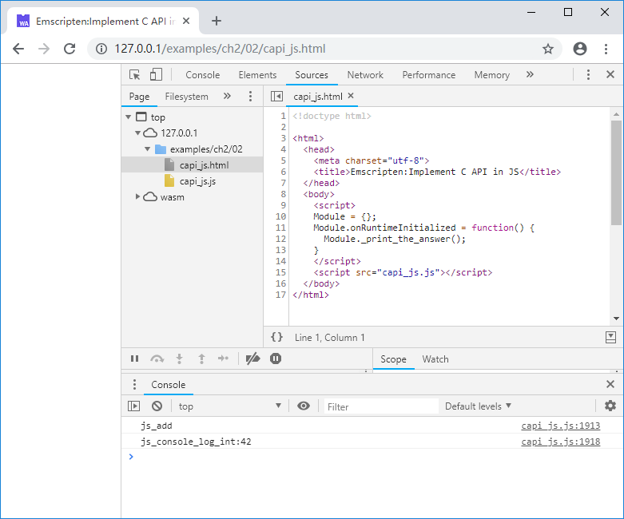

2.2 JavaScript函数注入C
Emscripten提供了多种在C环境调用JavaScript的方法，包括：
EM_JS/EM_ASM宏内联JavaScript代码emscripten_run_script函数- JavaScript函数注入（更准确的描述为：“Implement C API in JavaScript”，既
在JavaScript中实现C函数API）
本节将重点介绍其中的最后一种。
2.2.1 C函数声明
在C环境中，我们经常碰到这种情况：模块A调用了由模块B实现的函数——既在模块A中创建函数声明，在模块B中实现函数体。在Emscripten中，C代码部分是模块A，JavaScript代码部分是模块B。例如创建capi_js.cc如下：
//capi_js.cc
EM_PORT_API(int) js_add(int a, int b);
EM_PORT_API(void) js_console_log_int(int param);
EM_PORT_API(void) print_the_answer() {
int i = js_add(21, 21);
js_console_log_int(i);
}
print_the_answer()调用了函数js_add计算21+21，然后调用js_console_log_int()来打印结果，后二者仅仅给出了声明，函数实现将在JavaScript中完成。
基于2.1.1相同的理由，C函数API声明时应该使用C风格的符号修饰。出于简便，我们在声明js_add()与js_console_log_int()时沿用了EM_PORT_API宏（该宏展开后会增加EMSCRIPTEN_KEEPALIVE定义，由于函数并没有在C代码中实现，此时EMSCRIPTEN_KEEPALIVE并没有实际作用）。
2.2.2 JavaScript实现C函数
创建一个JavaScript源文件pkg.js如下：
//pkg.js
mergeInto(LibraryManager.library, {
js_add: function (a, b) {
console.log("js_add");
return a + b;
},
js_console_log_int: function (param) {
console.log("js_console_log_int:" + param);
}
})
代码按照两个C函数各自的声明定义了两个对象js_add以及js_console_log_int，并将其合并到LibraryManager.library中——在JavaScript中，方法（或者说函数）也是对象。
tips
LibraryManager.library可以简单的理解为JavaScript注入C环境的库，既2.2.1中所说的“模块B”。虽然事实上它远比这要复杂，但这种简单的类比足以应对大部分常规应用。
执行下列命令：
emcc capi_js.cc --js-library pkg.js -o capi_js.js
--js-library pkg.js意为将pkg.js作为附加库参与链接。命令执行后得到capi_js.js以及capi_js.wasm。按照之前章节的例子在网页中将其载入，并调用C导出的print_the_answer()函数：
//capi_js.html
<body>
<script>
Module = {};
Module.onRuntimeInitialized = function() {
Module._print_the_answer();
}
</script>
<script src="capi_js.js"></script>
</body>
浏览页面，控制台将输出：

自此，我们实现了在C环境调用JavaScript方法。
2.2.3 闭包限制及解决办法
使用“mergeInto(LibraryManager.library……”注入的方法不能直接使用闭包。当然这可以通过在注入方法中调用其他JavaScript方法来间接实现。比如我们创建closure.cc如下：
//closure.cc
#include <stdio.h>
EM_PORT_API(int) show_me_the_answer();
EM_PORT_API(void) func() {
printf("%d\n", show_me_the_answer());
}
show_me_the_answer()函数在closure_pkg.js中实现
//closure_pkg.js
mergeInto(LibraryManager.library, {
show_me_the_answer: function () {
return jsShowMeTheAnswer();
}
})
show_me_the_answer()调用了jsShowMeTheAnswer()，后者将在网页closure.html中实现：
//closure.html
<body>
<script>
function f1(){
var answer = 42;
function f2() {
return answer;
}
return f2;
}
var jsShowMeTheAnswer = f1();
Module = {};
Module.onRuntimeInitialized = function() {
Module._func();
}
</script>
<script src="closure.js"></script>
</body>
熟悉JavaScript的读者一定已经发现了：jsShowMeTheAnswer()使用了闭包。
使用这种方法，不仅可以绕过“mergeInto(LibraryManager.library……”注入的方法不仅能直接使用闭包的限制，还可以动态调整注入函数的行为——比如上例中我们可以在JavaScript环境中动态调整jsShowMeTheAnswer()对象，从而改变C环境中的show_me_the_answer()函数的返回值。
2.2.4 JavaScript函数注入的优缺点
- 优点：使用JavaScript函数注入可以保持C代码的纯净——既C代码中不包含任何JavaScript的成分；
- 缺点：该方法需要额外创建一个.js库文件，维护略为麻烦。